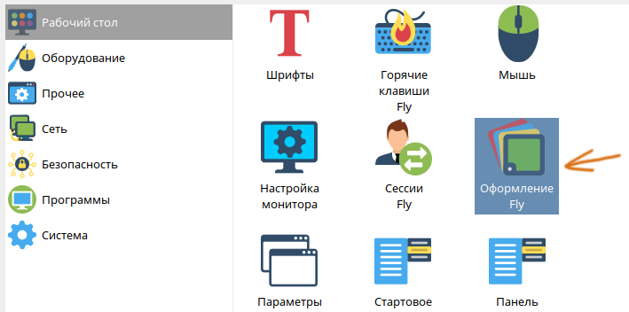
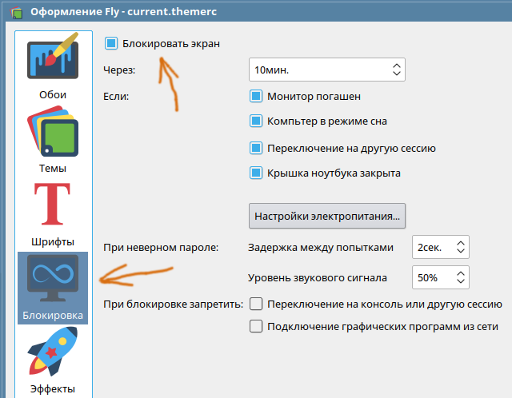

Дистрибутив Astra Linux часто используется во встраиваемых системах, в которых не должна происходить блокировка экрана. В данной статье рассказывается, как отключить блокировку экрана в Astra Linux 1.6 через пользовательский интерфейс, и через конфигурационные файлы. Первый способ подойдет для обычного пользователя, второй может потребоваться администратору, чтобы удаленно произвести отключение блокировки экрана через консоль.
Следует обратить внимание, что в этой статье речь идет об отключении экрана блокировки, то есть экрана, который появляется спустя некоторое время бездействия пользователя, и который требует ввода пароля для разблокировки. Это не отключение скринсейвера или перехода экрана в энергосберегающий режим. Это именно отключение экрана блокировки.
Отключение через GUI
В меню выбрать: Панель управления - Рабочий стол - Оформление Fly.

Далее нужно выбрать раздел Блокировка и снять галочку Блокировать экран.

Данный интерфейса так же можно вызвать командой fly-admin-theme.
Отключение через консоль
Для отключения блокировки экрана через консоль, надо отредактировать пользовательский файл:
~/.fly/theme/current.themerc
В нем требуется сделать следующие настроки:
LockerOnDPMS=false
LockerOnLid=false
LockerOnSleep=false
LockerOnSwitch=false
ScreenSaverDelay=0
После перезапуска сессии пользователя, экран блокировки перестанет появляться.